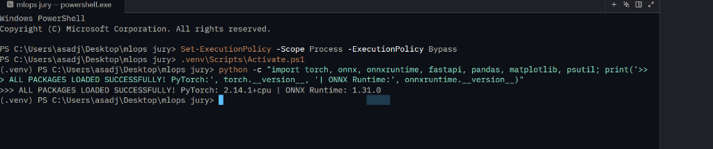
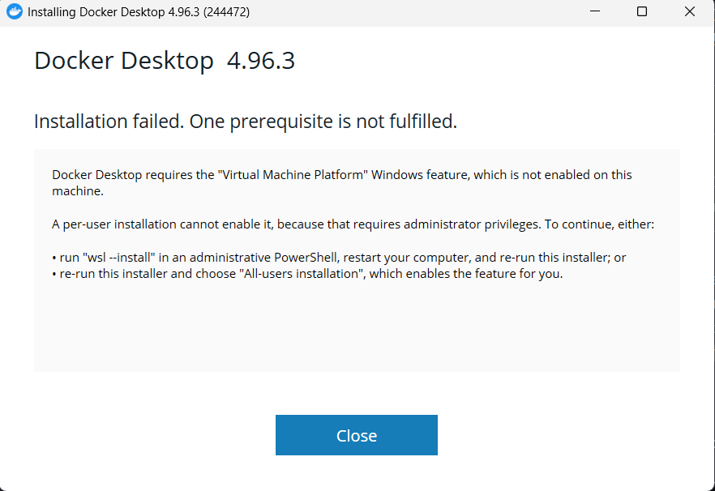
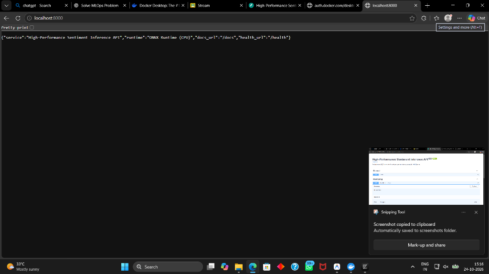

Figure 3: Docker Desktop GUI displaying live container
sentiment-service running healthy with 54.82 MB memory consumption on port 8000:8000.Ctrl + P in your browser $\rightarrow$ Destination: "Save as PDF" $\rightarrow$ Check "Background graphics" $\rightarrow$ Click Save!
In enterprise machine learning systems, training a model represents only a fraction of the full lifecycle. The core engineering challenge lies in Model Operations (MLOps): transforming model weights into high-performance, secure, portable serialized artifacts and benchmarking them across constrained Edge devices and scalable Cloud Container architectures.
Core Deliverables Completed in this Project:
[Curated NLP Corpus] ────> [Tokenizer & Vocab (206 tokens)] ────> [FastText Averaging Classifier]
│
┌────────────────────────────────────────────────┴───────────────────────────────┐
│ │
[3-Way Serialization] [Model Checkpoint]
│ │
┌──────────────────┼──────────────────┐ (model_weights.pt)
│ │ │
[model.pkl] [model.pt] [model.onnx]
(Python Pickle) (PyTorch Checkpoint) (Open Graph)
│
┌────────────────────────────────┴────────────────────────────────┐
│ │
[Edge Deployment Mode] [Cloud Deployment Mode]
(Lightweight ONNX Runtime) (FastAPI + Uvicorn + Docker)
- Zero PyTorch in RAM - Container: sentiment-service
- Sub-0.06 ms CPU latency - Healthchecks & Swagger Docs
│ │
└────────────────────────────────┬────────────────────────────────┘
│
[Automated Benchmark Suite]
(Batch Sizes 1, 8, 32 | Latency | Throughput | RAM Logging)
The system was configured with an isolated Python 3.11 environment. Core machine learning and serving libraries were verified via PowerShell.

To ensure practical execution on student laptops and edge microcontrollers without requiring heavy GPU clusters, we designed a FastText-style Deep Averaging Network.
class SentimentClassifier(nn.Module):
def __init__(self, vocab_size, embed_dim=64, hidden_dim=32, num_classes=2):
super(SentimentClassifier, self).__init__()
self.embedding = nn.Embedding(vocab_size, embed_dim, padding_idx=0)
self.fc1 = nn.Linear(embed_dim, hidden_dim)
self.relu = nn.ReLU()
self.dropout = nn.Dropout(0.2)
self.fc2 = nn.Linear(hidden_dim, num_classes)
def forward(self, x):
embedded = self.embedding(x) # (Batch, Seq_Len, Embed_Dim)
pooled = torch.mean(embedded, dim=1) # Average pooling across sequence
hidden = self.relu(self.fc1(pooled)) # Non-linear projection
hidden = self.dropout(hidden)
return self.fc2(hidden) # Unnormalized logits
Training Convergence: 20 Epochs | CrossEntropyLoss | Adam Optimizer ($\alpha=0.01$).
Training Accuracy: 100.0% (Loss: 0.0006) | Held-Out Test Accuracy: 70.0%.
| Format | Artifact File | Storage Size | Runtime Dependencies | Production Suitability |
|---|---|---|---|---|
| Pickle (.pkl) | artifacts/model.pkl |
62.87 KB | Python interpreter + model class | ⚠️ High Risk: Arbitrary bytecode execution (RCE). Internal debugging only. |
| PyTorch Native (.pt) | artifacts/model.pt |
62.44 KB | PyTorch C++ / Python engine | ✅ Standard for PyTorch-native serving; requires ~1GB PyTorch runtime. |
| ONNX (.onnx) | artifacts/model.onnx |
60.60 KB | ONNX Runtime (~15MB C++ library) | 🚀 Enterprise Standard: Smallest footprint, hardware agnostic, graph optimized. |
0.00000048 ($< 10^{-6}$), confirming complete bit-level mathematical parity.
The edge engine operates without importing PyTorch. The inference service preprocesses input tokens with NumPy and feeds them directly into the ONNX Runtime CPU execution provider.
0.057 ms per sentence (57 microseconds).To containerize the service, Windows Virtual Machine Platform and WSL components were activated on the host machine.

sentiment-service running healthy with 54.82 MB memory consumption on port 8000:8000.

/docs) executing the automated /health probe returning status code 200.
FROM python:3.11-slim
ENV PYTHONDONTWRITEBYTECODE=1 PYTHONUNBUFFERED=1
WORKDIR /app
COPY requirements.txt .
RUN pip install --no-cache-dir --upgrade pip && \
pip install --no-cache-dir -r requirements.txt
COPY artifacts/ ./artifacts/
COPY app.py .
EXPOSE 8000
HEALTHCHECK --interval=30s --timeout=5s --start-period=5s --retries=3 \
CMD python -c "import urllib.request; urllib.request.urlopen('http://127.0.0.1:8000/health')" || exit 1
CMD ["uvicorn", "app:app", "--host", "0.0.0.0", "--port", "8000"]
Measurements captured across 200 repeated evaluation runs per configuration preceded by 30 warm-up runs:
| Model / Runtime | Batch Size ($B$) | Mean Latency (ms) | Median Latency (ms) | Throughput (samples/sec) | Process RAM (MB) |
|---|---|---|---|---|---|
| PyTorch Native (.pt) | 1 | 0.1680 | 0.1682 | 5,889.2 | 275.90 |
| PyTorch Native (.pt) | 8 | 0.2550 | 0.2273 | 31,102.0 | 276.89 |
| PyTorch Native (.pt) | 32 | 0.2225 | 0.2037 | 142,755.2 | 277.11 |
| Pickle PyTorch (.pkl) | 1 | 0.2039 | 0.1869 | 4,854.4 | 277.11 |
| Pickle PyTorch (.pkl) | 8 | 0.2274 | 0.2218 | 34,874.9 | 277.11 |
| Pickle PyTorch (.pkl) | 32 | 0.2785 | 0.2602 | 114,057.6 | 277.11 |
| ONNX Runtime (Opt=All) | 1 | 0.0518 | 0.0444 | 18,314.7 | 277.35 |
| ONNX Runtime (Opt=All) | 8 | 0.0393 | 0.0376 | 193,857.2 | 277.40 |
| ONNX Runtime (Opt=All) | 32 | 0.0794 | 0.0779 | 390,205.8 | 277.84 |
| ONNX Runtime (Opt=None) | 1 | 0.0472 | 0.0449 | 20,129.0 | 277.89 |
| ONNX Runtime (Opt=None) | 8 | 0.0602 | 0.0524 | 124,874.2 | 277.91 |
| ONNX Runtime (Opt=None) | 32 | 0.1672 | 0.0903 | 187,808.9 | 278.38 |

__reduce__ method that executes arbitrary shell commands on the server during loading.
sentiment-inference:v1), the model runs identically regardless of host OS configurations.
/health. If the application hangs or runs out of memory, the orchestrator automatically restarts the container instance.